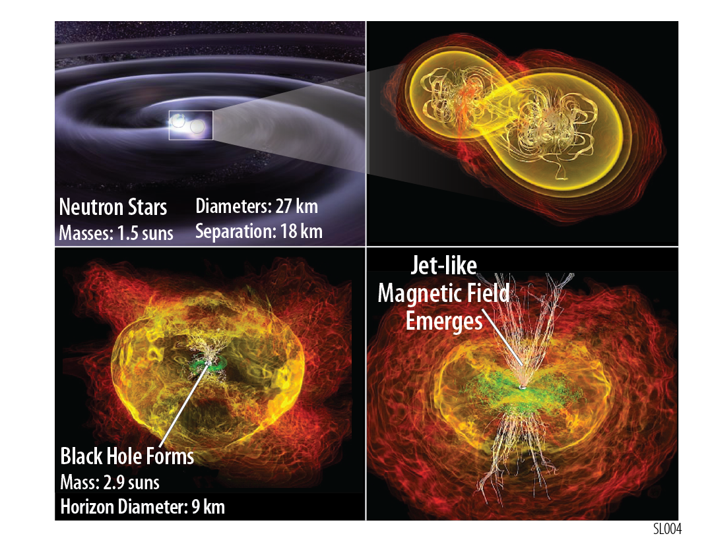
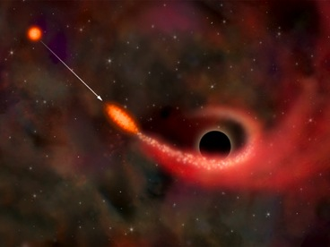

TAP Science
Gravitational Wave Counterparts
The emerging field of GW astronomy has made the detection of GW counterparts in the coming years a highly anticipated discovery. While counterparts may be first seen as soon as 2019 or the early 2020's via massive observational campaigns on the ground and in space, an optimized and dedicated GW counterpart observatory like TAP will be needed to fully realize the EM counterpart potential of placing GW sources in their astrophysical context, including source population studies.
Neutron Star Mergers
TAP will be a very capabable instrument for detecting both Gamma-ray Burst (GRB) prompt emission with the GTM and WFI, and afterglows with the WFI, XRT, and IRT, including those with short durations generally attributed to the merger of two neutron stars or a neutron star and black hole. Those mergers within the gravitational wave detection horizon, and with their jets pointed towards Earth are expected to be coincident with short duration GRBs. Joint electromagnetic and gravitation wave observations will enable the measurement of progenitor masses, binary orbit parameters, energetics, host galaxy properties, redshift, and the environment of these systems.
The IRT will also be poised to detect the delayed "kilonova" emission days to weeks after the gravitational wave detected, which is powered by the nuclear decay of material processed by rapid neutron capture (r-process) that is ejected during the merger. Kilonovae emission is isotropic, maximizing the probability of counterpart detection.
Supermassive Black Hole Binaries

Pulsar Timing Arrays (e.g. NANOGrav, EPTA, PPTA, IPTA) are predicted to detect binary supermassive black holes with high masses (≳ 109 M⊙), long periods (Torb ≳ 1 yr), and reside in the local Universe (z≲ 1). The all-sky soft X-ray survey conducted by the WFI will provide candidate binary supermassive black holes that could be used to resolve their gravitational wave emission.
LISA will present another path to supermassive black hole binary counterparts. LISA will provide an early- warning system that will give error boxes on the order of a few degrees as much as a day before the binary BH merger. This will allow focused observations with the XRT and IRT. For binary systems with non-trivial amounts of gas in the vicinity, prompt signatures are likely.
Time Domain Astronomy
With the 2020's bringing about an era of wide-field survey telescopes across the EM spectrum (LSST in optical, WFIRST in NIR, LOFAR/MWA/SKA in radio), a high-energy counterpart discovery machine like TAP is needed to both detect and follow-up transient and variable sources in cooperation with these other facilities. Together they will produce simultaneous broadband observations of objects that vary on years timescales (AGN, compact binaries),coincident detection of new transients like GRBs, Supernovae (SNe), Tidal Disruption Events (TDEs), perhaps Fast Radio Bursts (FRBs), and counterparts of neutrino and GW multi-messenger sources. TAP will be essential to realize the full potential of the worldwide investments in survey instruments of the 2020's.
High-Redshift Gamma-ray Bursts
GRBs can serve as unique probes of the epoch of reionization. Because their afterglows are so remarkably bright, GRBs have been detected out to redshift 8–9 [Salvaterra et al. 2009, Tanvir et al. 2009, Cucchiara et al. 2011]. Furthermore, thanks to their simple power-law energy spectra, GRBs serve as complementary probes to high-redshift Lyman break galaxies, as they reveal galaxies independent of host luminosity.
After the discovery of high-redshift GRBs by the GTM and/or the WFI, TAP will promptly slew, and 1-2 minutes later the XRT and IRT begin observing the fading afterglows. The IRT will directly enable the measurement of the neutral H fraction for many lines of sight into and even beyond the epoch of reionization. With its low-resolution spectrograph, the IRT will promptly identify events at redshifts of interest via the detection of the Lyman break. These sources will be promptly relayed to space- and ground-based observers for follow-up with sensitive facilities (e.g. ATHENA), and large aperture optical/NIR facilities for studies of the ISM (e.g., metallicity) and IGM (e.g., neutral H fraction) of the environments hosting the first massive stars.
Infrared Transients
Even with a modest ∼70 cm aperture, the IRT will be one of the most sensitive facilities operating in terms of limiting magnitude for an isolated point source. Together with its rapidly slewing spacecraft bus, the IRT will fill a unique void in the time-domain landscape: rapid-response, sensitive NIR imaging of transient and variable phenomena. A wide variety of additional science will be enabled by a sensitive, wide-field IR telescope on a fast-slewing spacecraft. A few of these possibilities are: the discovery of pair-instability supernovae from extremely massive stars in the early Universe [Tanaka et al. 2012], dust echoes from the flares generated by the tidal disruption of stars by SMBHs in inactive galaxies [van Velzen et al. 2016], unveiling the nature of intermediate luminosity red transients [Thompson et al. 2009], IR follow-up of transients discovered by LSST and the SKA (e.g. dust-obscured SNe, orphan GRB afterglows).
Tidal Disruption Events
TAP will vastly increase the number of detected TDEs, and enable prompt multi-wavelength follow-up observations. Most galaxies contain SMBHs at their centers, which are usually in quiescence and hence have poorly known properties, until sporadically activated by an infalling star that is disrupted when scattered into the tidal radius of the SMBH.
Supernova Shock Breakouts
The shock launched in the deep core of a Type II ccSN propagates through the envelope and eventually breaks through the surface, manifesting itself as a short but luminous soft X-ray flare. To date, only one such event has been detected from SN 2008D [Soderberg et al. 2008], during the 12 years of observations with the narrow-field Swift-XRT. Owing to the combination of soft X-ray sensitivity and wide FoV, TAP will detect these short-lived shock breakouts
Active Galactic Nuclei
Type I AGN are understood to be unobscured accreting SMBHs with a direct line of sight to their central engine, characterized by a strong X-ray component (typically >10% of the bolometric luminosity) and variable over a wide range of timescales [Beckmann & Shrader 2012], from hours to years. Historically, AGN light curves have come from intensive, targeted campaigns focused on a few bright sources [Markowitz & Edelson 2004; McHardy et al. 2006; Körding et al. 2007]. TAP will provide regular all sky X-ray and NIR monitoring of AGN probing emission reprocessing mechanisms and the geometry of the central engines.
Last modified: Tue Apr 11 15:20:36 EDT 2017